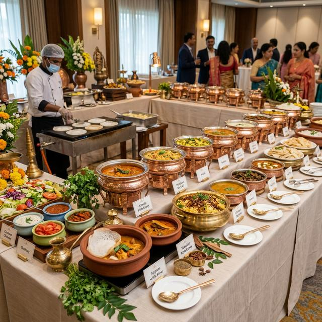
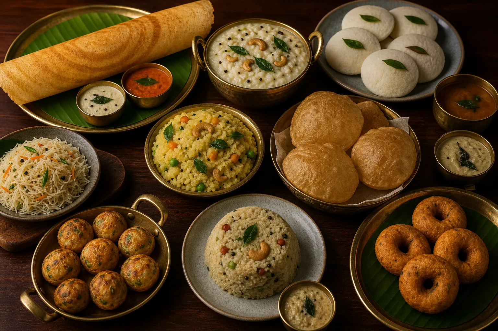
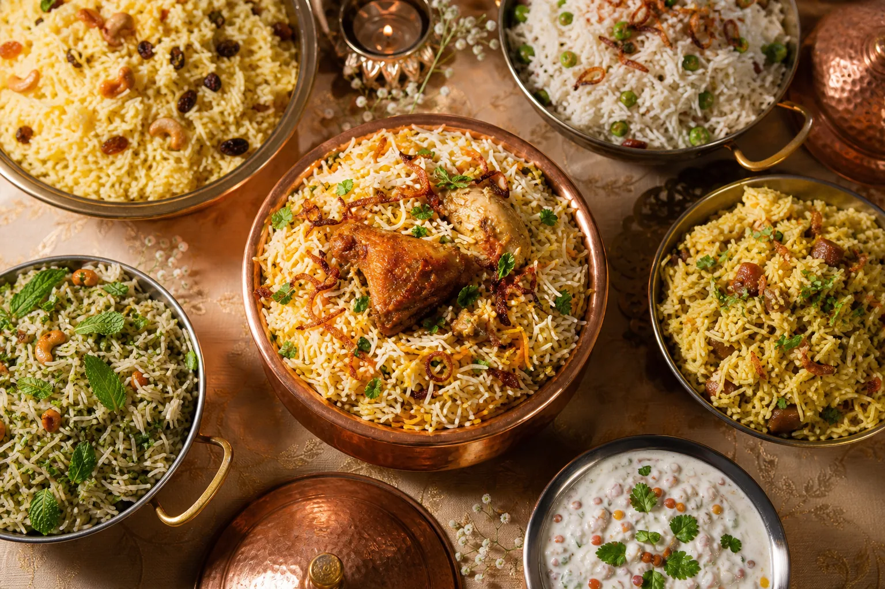

The best vegetarian wedding caterers in Chennai combine excellent flavour with dependable event execution. Look for a team that understands South Indian wedding traditions, can customise each meal, follows hygienic preparation practices and provides enough trained staff for your guest count. A strong caterer should also explain the quotation clearly, plan the venue workflow and document dietary requirements before the wedding day.
Share your date, venue, function schedule, guest count, preferred menu and dietary rules. These details produce a more accurate plan than asking only for a price per plate.
How to Find the Best Vegetarian Wedding Caterers in Chennai
Search results can give you names, but the right choice depends on your celebration. Ask each shortlisted caterer about weddings of a similar size, the number of meals involved and the venue conditions they have handled. A 150-person engagement at home requires a different operating plan from a 1,000-person reception at a marriage hall.
Evaluate food and service together. During a tasting, review freshness, seasoning, portion size and presentation, but also discuss how the dishes will be produced consistently for hundreds of guests. Confirm the number of cooks, servers and supervisors, how hot food will be replenished and how dining areas will be cleared between sittings.
- Relevant experience: vegetarian weddings matching your scale and service format.
- Menu knowledge: traditional Tamil dishes, reception buffets and seasonal choices.
- Customisation: clear support for family recipes and dietary preferences.
- Hygiene: ingredient handling, clean equipment and safe serving temperatures.
- Accountability: a named event supervisor and documented responsibilities.
- Transparent quotation: food, staffing, transport, equipment and additions listed separately.

Vegetarian Wedding Catering in Chennai for Every Function
Chennai weddings may include an engagement, nalangu, reception, early-morning muhurtham, wedding lunch and post-wedding gathering. Repeating one large menu at every function makes the celebration feel heavy. Instead, give each meal its own purpose: quick and comforting tiffin in the morning, an authentic banana-leaf feast after the ceremony and a colourful multi-cuisine buffet for the reception.
Professional vegetarian wedding catering in Chennai also accounts for venue logistics. Check whether cooking is permitted onsite, when the kitchen becomes available, where equipment can be unloaded and how far the dining area is from the preparation space. Reliable timing matters especially for idly, dosa, vadai, poori and other dishes that are best served immediately.


Pure Veg, Brahmin, Jain and No-Onion No-Garlic Requirements
“Vegetarian” can mean different things to different families. Some celebrations require a fully vegetarian menu, while others need Brahmin-style preparation, Jain choices or selected dishes without onion and garlic. Do not leave these requirements as a casual verbal request. Record which ingredients must be avoided, whether separate vessels or preparation areas are expected and how dishes should be labelled during service.
Traditional authenticity is more than a dish list. For a Tamil wedding lunch, the order of serving, portion size, freshness of rice and attentiveness of refills shape the guest experience. Ask whether the team understands your community’s customs and whether family representatives can review the final sequence before the function.
If your wedding also needs broader Veg and Non-Veg comparisons, costs or large-event logistics, see our complete guide to the best wedding caterers in Chennai.
Traditional Banana-Leaf Service or Vegetarian Buffet?
Banana-leaf service creates a warm, ceremonial experience and works beautifully for the wedding lunch. It requires enough dining space, planned sittings and trained servers who understand course order. Start with sensible portions, then offer generous refills; this preserves hospitality while reducing waste.
A buffet offers flexibility and supports reception crowds arriving at different times. It can include live counters and multiple cuisines, but the layout must prevent queues. Popular items may need duplicate counters for larger weddings. Families can also combine both formats—banana-leaf service for the ceremony meal and a vegetarian buffet for the reception.
Vegetarian Wedding Catering Cost in Chennai
No single rate applies to every celebration. The quotation depends on guest count, ingredient quality, menu depth, premium sweets, live counters, service style, equipment, venue access, transport and staffing. A simple breakfast, traditional leaf meal and elaborate reception buffet naturally have different costs. Online “starting prices” are useful only as broad references.
| Quotation factor | What to confirm | Why it matters |
|---|---|---|
| Guest count | Minimum guarantee and final confirmation date | Controls ingredients, staff and service points |
| Menu | Exact dishes, accompaniments and portions | Prevents incomplete comparisons |
| Service | Buffet or leaf service, staff and supervisor | Determines guest experience and labour |
| Equipment | Counters, vessels, crockery and tables | Avoids unexpected rental charges |
| Logistics | Transport, setup, venue access and cleanup | Changes operational time and cost |
| Additions | Extra guests, dishes, counters and taxes | Keeps final billing predictable |
Request the same information from every caterer. The lowest per-plate number is not necessarily the lowest final bill if staff, transport, equipment or important accompaniments are excluded.
How Many Counters and Servers Does Your Wedding Need?
Guest count changes the whole service design. An intimate wedding may work with one compact buffet. For 300 to 500 guests, duplicating high-demand dishes reduces queues. At larger receptions, plate pickup, beverages, live counters, desserts and waste collection should be separated so people can move comfortably.
For banana-leaf dining, estimate the number of seats and sittings, then match the serving team to the turnaround time. Elderly guests, children and guests with accessibility needs should also be considered. Ask the caterer to explain the proposed workflow instead of discussing only food quantities. Planning a smaller engagement, pooja or family celebration? Read our dedicated guide to small function catering services in Chennai.
Vegetarian Wedding Caterer Booking Checklist
Why Consider Baruch Caterers for a Vegetarian Wedding?
Baruch Caterers creates customised vegetarian and non-vegetarian menus for weddings and celebrations across Chennai. Our online menu lets families browse categories, select preferred dishes and generate a QR-based list for quotation. This makes early menu discussions clearer and helps the team understand the family’s priorities.
We begin with the event schedule, venue, estimated guests, service format and dietary preferences rather than forcing every wedding into one fixed package. Baruch Caterers is based at No. 61, 6th Street, Block N, Agathiyar Nagar, Villivakkam, Chennai 600049. Availability and service planning depend on the confirmed date, venue and requirements.
Frequently Asked Questions
How do I choose the best vegetarian wedding caterers in Chennai?
Compare relevant wedding experience, menu flexibility, hygiene, service planning, guest capacity and a written itemised quotation. Arrange a tasting and identify the event supervisor.
What dishes are included in a vegetarian wedding menu?
The selection may include South Indian breakfast, a banana-leaf lunch, reception starters, breads, gravies, rice, live counters, sweets, desserts and beverages. Customise it for the function time and guests.
Can you prepare food without onion and garlic?
Dietary preferences can be discussed during menu planning. Confirm all excluded ingredients and preparation expectations in writing before finalisation.
Do you arrange banana-leaf service?
Traditional banana-leaf service can be planned according to the menu, guest count, venue, dining sittings and serving-team requirements.
How early should we book a vegetarian wedding caterer?
Begin discussions several months ahead, especially for popular dates, so there is time for tasting, menu decisions and venue coordination.
What details are required for a quotation?
Share the date, venue, schedule, estimated guests, cuisine preferences, dietary rules, service style and selected dishes.
Can traditional and modern vegetarian dishes be combined?
Yes. A traditional ceremony meal can be paired with a contemporary reception buffet when the menu is balanced and operationally practical.